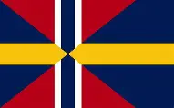

En esta pagina podrás encontrar informacion canonica sobre la serie de YOMBILAND y el universo de esta misma, esto incluye las series de El Imperio Villasantino y Las Historias de Yombiland ADVERTENCIA:El contenido de esta pagina web no es para conseguir información del mundo real, esta pagina web fue hecha para una serie de Youtube sobre un Alternative Universe con paises, personajes, guerras y eventos ficticios. Por lo tanto, esta pagina debe de ser tomada como entretenimiento, no como medio de informacion. El creador de esta pagina y quienes se mencionan en ella no se hacen responsables de cualquier evento de amarillismo o desinformación ó cualquier otra queja relacionada con esta pagina web, se les advirtió al inicio, por lo tanto, es responsabilidad del visitante cualquier error o fallo que tenga al consultar informacion de esta pagina web.
Kirota Saikou (Mantiene una buena relacion con Yombi)
Country X Balls
JaliscoBall(Retirado actualmente)
Axel Kamiel 44
Countryballs Peru
Posteriormente se unirián:
Countryballs CO
La republica de the pana
Countryballs Phone
Carnir
MatiasRXL
Mr. Countryballs argentina
RBall
Joshua235
The Uvietic (aunque nunca salio oficialmente)
Mr. Honduras Sovietico (como invitado especial)
PROYECTO: YOMBILAND
Mapa oficial de los años 20's
La serie de Yombiland surgió por dos razones principales: El fracaso de la primera serie de Yombi "invasones multiversales" y la creacion de un Servidor de DISCORD oficial para el canal.
La serie de Invasiones Multiversales fue un proyecto en el que Yombi trabajó del 14 de Junio del 2023 al 12 de Julio del mismo año, aunque el piloto de esa serie saldría el 11 de Junio.
La otra razón, la creación de un Servidor de DISCORD oficial del canal es una historia más larga.
El dia 17 de Octure del 2023, Yombi crearia su servidor oficial para su canal. Obviamente en ese tiempo no era tan elaborado como anhora. Conforme el servidor se hacia más grande, Yombi le añadia más bots y canales, hasta que conoció servidores de Estilo Role Play. El role play es basicamente actuar una situacón de la vida real conforme un papael asignado.
El servidor al que Yombi habia entrado fué a La republica de Terramagna y posteriormente entraria al Servidor Oficial de PAC (no recuerdo bien si ese era el nombre) donde conocería a MiguelMateo2018.
Algo en común que tenian estos dos servidores era que formaban parte de una "organización" de servidores de un RP mayor, uno global. Yombi en ese momento quería saber si su servidor podía entrar en dicha organización, sin embargo, aún le faltaban requisitos.
Yombi decidió dividir en dos su servidor; Canales para Youtube y Canales para Role Play. Todo marchaba bien en ese momento, hasta que llegó un usuario llamado ElNevasNivy quien presumía de ser un hacker. El Villasantino y él ya se conocian, sin embargo, hubo una ocasión en la que nivy se pasó de los limites de las reglas del servidor y comenzó a acosar a todos, ademas de meter un bot de raideo al servidor. Sin embargo, el servidor se salvó gracias al actuar de MiguelMateo2018.
El nivy había hecho el raideo en los canales de RP lo que generó confusión en Yombi al no saber distinguir en su momento si todo era parte del RP o era un raideo real. Al final de todo, el raideo se transfromó en "Yombiland temporada 1: Rebeldía" donde la frase "el partido del Villasantinoes una mierda" fue sacada del servidor cuando nivy dijo "villasantino y su canal son mierda"
OBSTACULOS EN LA PRODUCCIÓN DE YOMBILAND
Durante la producción de la serie hubieron algunos obstaculos que la retrasaron ó casi cancelan la serie e incuso el canal "Tambien soy Yombi"
Uno de los obstaculos fue la polemica con AquayRubyCountryballs ( conocida actualmente como Iruka Chan) la cual llevó a Yombi a enfocarse en la pelea en lugar de hacer su maldita serie.
Otros obstaculos principales fueron las multiples veces que un celular de Yombi se quedó sin espacio ó el sofware de su celuar ya no soportaba el editor. Esto se debe a que Yombi usaba el mismo celular para la escuela y youtube, ademas de no contar con una memoria micro sd con la que poder almacenar todos los archivos, lo que llevó a Yombi a abandonar su canal multiples veces, no lo hace por buscar atencion, sino por no contar con lo medios suficientes para conseguir otros dispoditivos más potentes ó con mayor almacenamiento.
Actualmente, Yombi ya no cuenta con todos los archivos originales, las banderas, animaciones de pantalla verde, animaciones normales, plantillas y sonidos usados anteriormente. Ha perdido aproximadamente un 94% de los archivos originales (no estoy exagerando). Si bien, se pueden recuperar del MD de discord, es un proceso tardado al tener demasiados mensajes en los chats.
CANCIONES Y LIBROS OFICIALES
Yombi ha escrito canciones oficiales para la serie, actualmente solo hay una en Youtube, sin embargo, el resto de canciones y sus letras completas se encuentra en esta pagina porque es la oficial... Obvio, ¿no?
Las canciones fueron hechas con ayuda de Inteligencia Artificial, sin embargo, las letras si fueron escritas por el propio Yombi, por lo tanto, son de su propiedad y no deben de usarse sin su permiso.
Otras obras son los libros oficiales de Yombiland, están siendo escritos en este momento por Yombi, sin embargo, aún no los ah terminado. Afortunadamente, aquí hay un adelanto del libro: La guerra Pancho-Anibaligia (Click para descargar)
PAISES DENTRO DEL UNIVERSO DE YOMBILAND
Dentro del universo de Yombiland, se encuentran varios paises que son parte del universo y tarde o temprano apareceran.
NOMBRE COMPLETO
HISTORIA
TERRITORIO
BANDERA/S OFICIAL/ES
Imperio Anibaligio
Fundado en el año 1884, es el resultado de una larga guerra de unificación entre todos los paises del norte.
Antiguamente era conocido como el reino de las provincias Anibaligias del norte, bajo el mando de Anibaligio II, quien a los 64 años de edad, libró batallas por la unificación.
Tras su muerte en la batalla de Varsovia, su hijo, Anibaligio III continuó con la campaña hasta el año 1884. Tras la unificacion, el reino pasó a llamarse Imperio Anibaligio. En el año 1900, el principe Hans de Prusia fue coronado como Anibaligio IV a los 27 años de edad, sin embargo, su crorna duró solamente 3 años. En 1903, tras la derrota en la guerra, fue asesinado a los 30 años durante una revolucion anti monarquica.
Su extension abarca la mitad de europa: Francia, Alemania, Polonia, Noruega, Finlandia, Suecia, Dinamarca, Escocia, Gales, Inglaterra y los paises Neerlandeses (Belgica, Luxemburgo y Holanda).
Imperio Pancho
A diferencia del Imperio Anibaligio, este imperio se formó a partir de las unione diplomaticas con otros reinos.
Las alianzas se hicieron a base de matrimonios arreglados con gente importante de otros reinos. Posterior a la guerra, cambió su bandera a un estilo más Romano.
Abarca el resto de Europa del sur: España, Italia, los balcanes y Austria.
Imperio Chino del gran Quing
La dinastía Qing fue la última dinastía imperial de China, gobernando desde 1644 hasta 1919. Durante su mandato, la dinastía experimentó una expansión territorial significativa, alcanzando un área de más de 5 millones de millas cuadradas. La dinastía fue fundada por el clan Manchú y marcó una nueva era en la historia de China, caracterizada por avances culturales y políticos, así como un eventual periodo de declive y colapso.
Imperio Ruso
El Imperio Ruso se estableció oficialmente en 1721 bajo el liderazgo de Pedro el Grande, quien modernizó el país y expandió sus fronteras. Este imperio fue el sucesor del Zarato ruso y se convirtió en una de las potencias más influyentes de su tiempo. Su capital fue San Petersburgo, fundada por Pedro el Grande como una "ventana hacia Occidente". Su final llegó cuando Yombi inició su revolucion en 1920.
Imperio Britanico
Despues de su independencia en 1903, ha prosperado siendo una de las potencias economicas mas grandes por detras de Escandinavia.
Escandinavia
Se independizó junto al reino unido luego del final de la guerra Pancho-Anibaligia en 1903. Ha prosperado tanto hasta convertirse en la cuarta potencia económica de Europa, detras del Imperio Pancho, Yombiland y el imperio Villasantino.
Abarca los territorios de Finandia, Noruega y Suecia

Republica Anibaligia
Nació de la revolucion anti monarca de 1903. La gente se puso a atacar el palacio de Berlín, sacando al emberador Anibaligio IV, obligandolo a huir. Sin embargo, los unicos que pudieron huir fue el bebé Villasantino y una mujer que lo cuidó. Cuando el emperador fue asesinado, un consejo tomó el puesto de gobierno interino hasta designar un nuevo gobernante en 1904.
Se quedó con: Los paises Neerlandeses, Alemania, media Polonia, Dinamarca y parte de Austria.
Republica Socialista de Yombiland
Nació de la revolucion rusa en el año de 1920 y logró derrocar al Zar Nicolas II en el año de 1923 con ayuda del recien formado Imperio villasantino. El resto de la historia la pueen encontrar en el libro Yombiland-. Las revoluciones.
Todo el territorio de la URSS.
Imperio Villasantino
Nació despues de obligar al emperador a firmar su renuncia el 15 de diciembre del año 1922. Posteriormente, el villasantino fue coronado como Villasantino I aunque dejó la administración del imperio al consejo imperial debido a que fue a Yombiland a firmar alianzas de todo tipo.
Republica Francesa
Producto de una independencia pacífica en 1904, el nuevo gobernante de la Republica Anibaligia firmó la independencia de Francia debido al bajo ejercito que poseia. Actualmente no se le ha dado un desarrollo a este país.
Francia del Norte, la zona sur aún está bajo dominio Pancho.
¡Gracias por visitar nuestra pagina web! Estaremos al tanto de tus recomendaciones, envialas a yombitos974@gmail.com Visita el canal oficial de Yombi:
 Mapa oficial de los años 20's
Mapa oficial de los años 20's